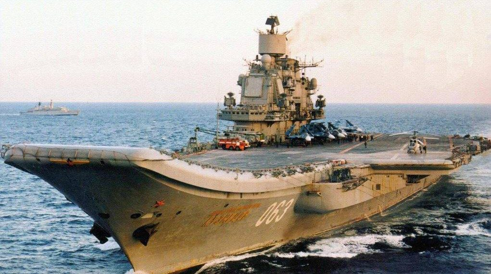
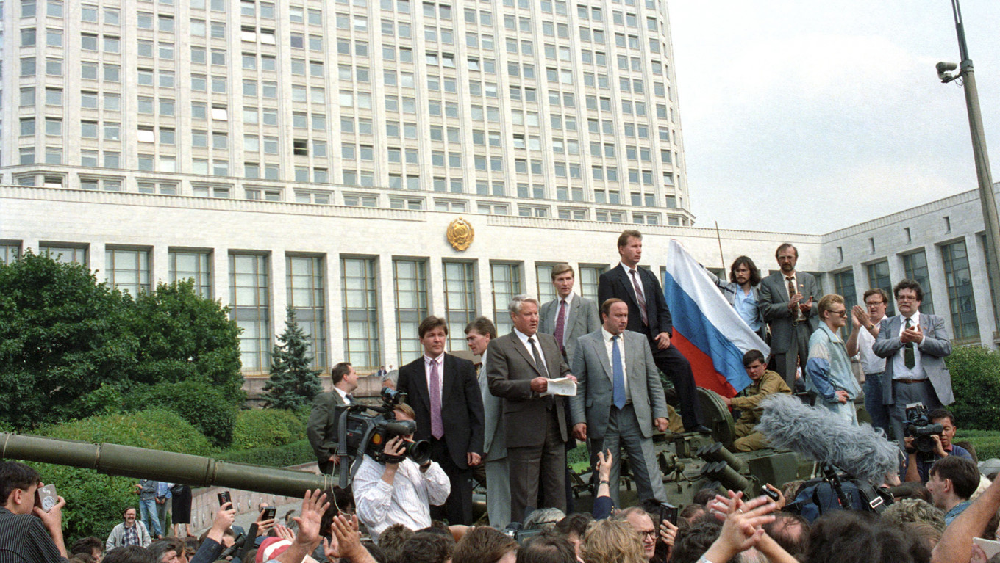
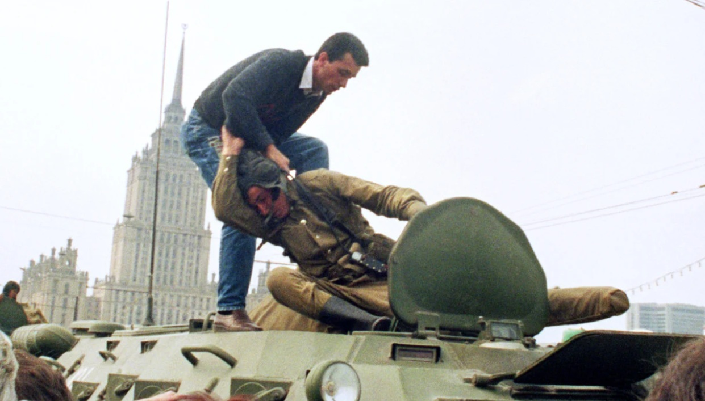
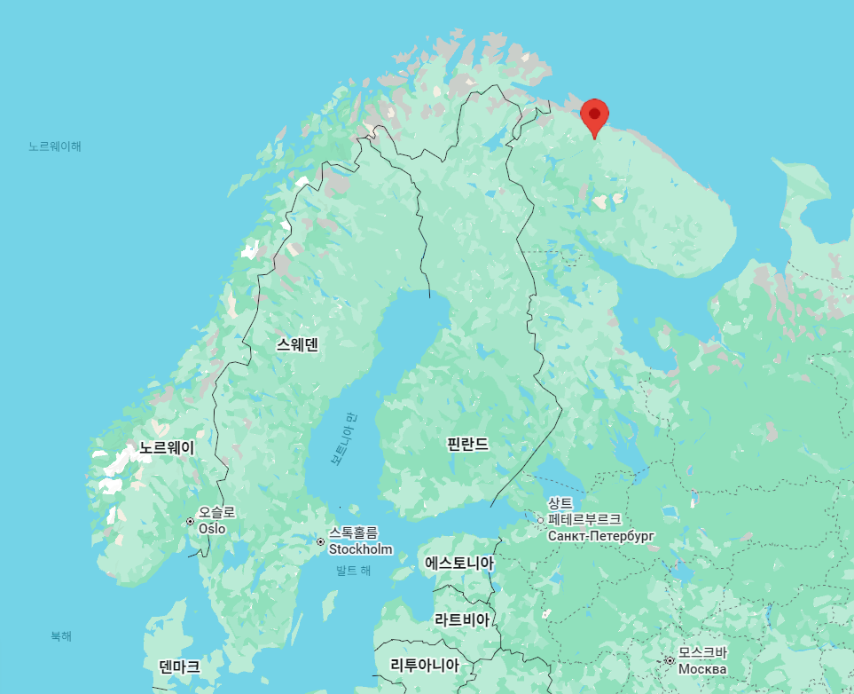
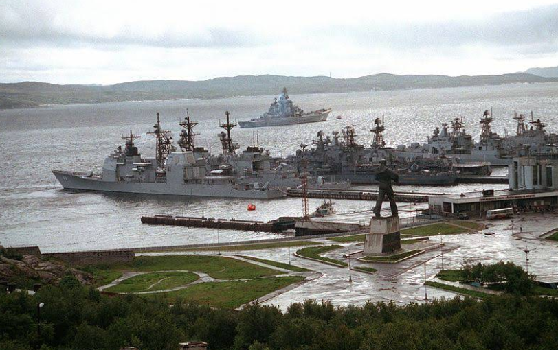
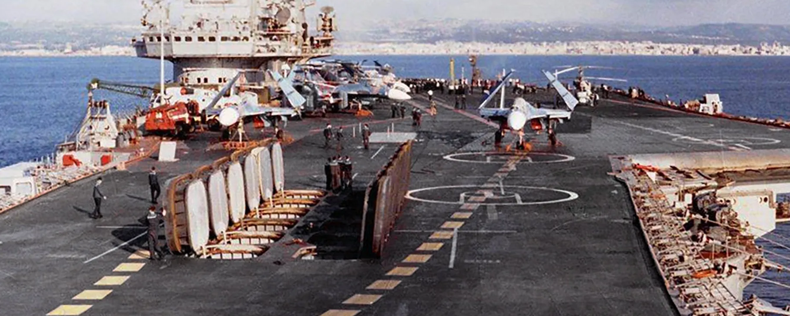
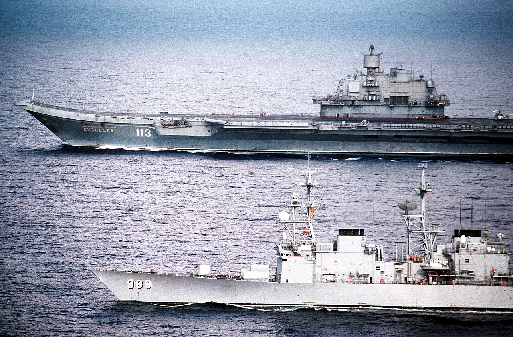
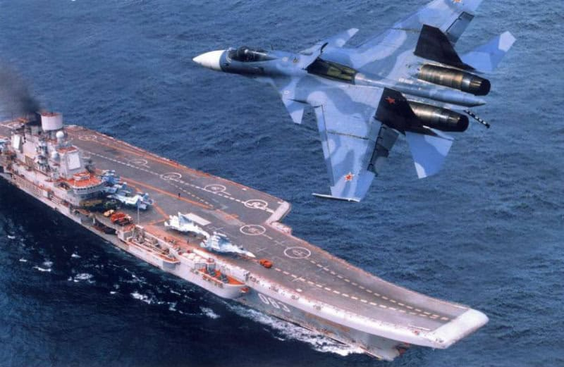
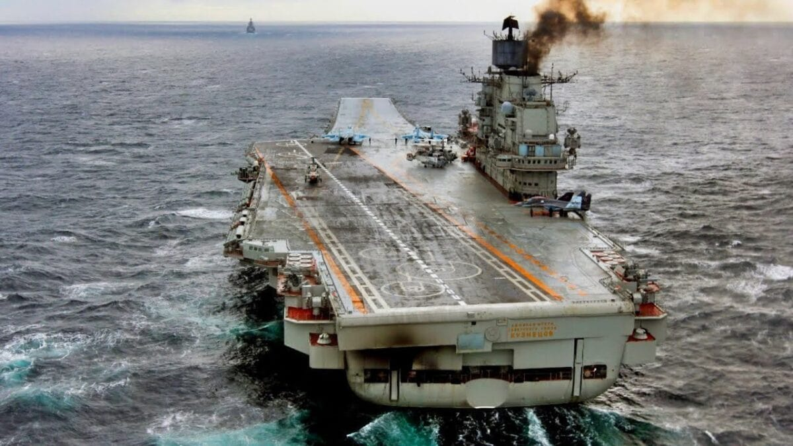

해협을 둘러싼 계산 (4) - 야반도주
게시: 2026-05-07T07:03:46+09:00
1980년대 초반, NATO는 소련이 흑해의 니콜라예프 조선소에서 또 대형 군함을 건조하고 있는 것을 알게 됨. 1985년 진수될 때 보니, 이건 완전히 본격적인 항공모함. 키에프급 항모는 그래도 군함의 거대한 상부 구조물이 갑판 정중앙을 차지했고 특히 선수 부분엔 대함 미쓸 발사관들이 장착되어 있어 정말 순양함처럼 생겼으나, 이번에 진수된 모습을 보니 상부 구조물은 크기도 작은데다 항모처럼 우현으로 몰려 있고, 선수부터 선미까지가 탁 트인 throug-deck을 갖추고 있었음. 소련은 뻔뻔스럽게도 이걸 또 항공순양함으로 불렀고, 프라우다(Pravda) 등 관영 매체를 통해 이 항모 아니 순양함은 북해함대에 배속될 것이라고 발표. 이 항모는 처음에는 Riga(라트비아의 수도)라고 명명되었으나 진수할 때는 브레즈네프(Leonid Brezhnev), 그러다 해상 시험 운용을 할 때는 이름을 다시 Tbilisi(그루지아의 수도)로 바꿨음. 당시 소련은 개혁 개방을 천명했던 고르바초프(Mikhail Gorbachev)가 막 취임했던 시기로서, 정치적 변혁기였기 때문.
(고르바초프는 소련 해체를 주도(?)한 개혁파 인물로서, 그의 Perestroika(페레스트로이카, 재건이라는 뜻)는 80년대 세계를 떠들석하게 했음. 우리나라와 소련의 수교도 그의 임기 중인 1990년 이루어질 정도로 우리와 서방에게는 무척 우호적인 인물로 인식되었지만, 최근 러시아에서 수행된 여론 조사에 따르면 절반 정도의 러시아인들은 그에 대해 부정적이며, 그의 정책을 긍정적으로 보는 사람은 15% 정도에 불과하다고.) NATO는 이 신규 소련 항모에 대해 어찌 대응할지 고민을 하기 시작. 아직 취역하지 못한 미완성의 항모 트빌리시는 북해함대에 배속될 것이라고 했으니 소련은 당연히 저걸 또 보스포러스 해협을 통해 지중해와 대서양을 거쳐 북해에 배치할 텐데, 키에프급과는 달리 아예 본격적인 항모였던 트빌리시까지 해협 통과를 허용할 경우 매우 좋지 않은 선례를 남길 것이기 때문. 그런데 미리 여러 전문가들과 협의해본 결과, NATO에서는 소련이 트빌리시를 해협에 밀어넣을 때 별다른 항의를 하지 않기로 미리 결정. 이유는 대략 다음과 같았음. 1) 소련이 항모를 자꾸 흑해 안에서 만드는 이유는 니콜라예프 조선소만이 항모 건조 능력이 있기 때문인데, 저 항모를 절대로 흑해 안에서만 운용하지는 않을 것이고 어떻게든 결국 해협 통과를 강행할 것임. 2) 결국 해협 관리 당사자인 튀르키예의 입장이 가장 중요한데, 소련과 국경을 맞대고 있는데다 최근 소련에서 천연가스를 수입하기 시작하는 등 소련과의 관계 개선에 나선 튀르키예는 어차피 결국 항모의 통과를 허용할 것임. 어차피 키예프급 항모도 통과를 허용했는데 저걸 막아설 뚜렷한 실익도 명분도 없음. 3) NATO가 튀르키예의 그런 결정에 항의를 해봐야, 얻을 것이 없음. 혹시라도 몽트뢰 조약을 개정하자는 이야기가 튀르키예나 소련에서 나오게 되면, 그 개정이 NATO에게 유리하게 개정된다는 보장도 없음.

(VTOL기가 아닌 함재기도 운용가능했던 소련 최초의 본격적인 항모 쿠즈네초프의 모습. 미해군 항모와는 달리 스키점프대를 장착한 것이 특징인데, 사출기(catapult) 대신 스키점프대를 장착한 이유는... 다년간의 연구 끝에도 결국 증기 사출기 개발에 실패했기 때문. 의외로 사출기가 만들기 어려운 물건인 모양. 현재에도 전세계에서 사출기 기술을 가진 나라는 미국과 중국, 딱 2개국 뿐. 프랑스 핵항모에도 증기 사출기가 있기는 하지만 그건 미국에서 라이센스 받아서 설치한 것.)
그런데 이렇게 미리 걱정할 필요가 없었음. 소련이 붕괴되기 시작한 것. 1989년 폴란드 헝가리 체코 등 동유럽 국가들의 공산정권이 붕괴되었고, 1990년 3월에는 리투아니아가 소련 구성국 중 최초로 독립을 선언했음. 이어서 6월에는 러시아가 옐친의 주도 하에 소련 내에서 독자적인 주권을 선언했음. 그야말로 난장판. 1991년 8월에는 급기야 소련 내부에서 친위 쿠데타가 일어나 소련의 붕괴를 막아보려는 시도가 있었으나, 옐친이 시민들과 함께 쿠데타 저지에 성공. 그리고 12월에는 러시아, 우크라이나, 벨라루스가 모여 소련의 해체를 의결하고 대신 독립국가연합(CIS) 창설을 선언.

(저때 만약 쿠데타가 성공했다면 세계 역사는 정말 많이 바뀌었을 듯. 안 좋은 방향으로...)

(당시 쿠데타에 참여한 탱크병을 끌어내는 러시아 시민. 러시아에서조차, 쿠데타가 설 땅은 없음.)
이러는 와중에 거의 완성된 상태에서 흑해를 돌아다니며 시운전을 하고 있던 트빌리시는 함명을 Admiral Kunznetsov로 변경하게 됨. 이젠 남의 나라 수도가 되어버릴 트빌리시라는 이름을 계속 가지고 있을 수는 없었던 것. 진짜 문제는 이름 같은 것이 아니었음. 러시아와 우크라이나, 벨라루스가 갈라서기로 할 때, 각지에 분산배치되어 있던 각종 군사자원들을 어떻게 나눌지 합의가 되었고, 특히 핵무기는 대부분 러시아가 가져가는 것으로 합의가 되었음. 그러나 그런 매우 복잡하고도 민감한 문제를 단시간 안에 졸속으로 합의한 것은 결코 좋은 선택은 아니었음. 나중에 딴 소리가 나오기 시작했던 것. 특히 쿠즈네초프에 대해서, 러시아는 이것이 원래부터 북해함대 소속이라고 대내외에 발표되었기 때문에 당연히 러시아 소유라고 생각하고 있었으나, 우크라이나에서는 다르게 생각하고 있었음. 1991년 11월, 우크라이나 총리는 돌연 쿠즈네초프가 우크라이나 해군 자산이라며 세바스토폴로 귀항 명령을 내림. 쿠즈네초프에 승선해있던 장교들과 승조원들은 대부분 러시아인들. 이들은 연료와 식량 등 당장의 필요 때문에라도 어쩔 수 없이 세바스토폴로 귀항하여 닻을 내려야 했으나, 북해함대에서는 난리가 남. 참모들과 대책을 논의한 북해함대 사령관 우스티멘코(Yuri Ustimenko)는 일설에는 전화로, 일설에는 본인이 직접 가명으로 우크라이나로 가서 쿠즈네초프의 함장에게 다음과 같은 명령을 내림. "당장 오늘 밤에 우크라이나 당국 몰래 닻을 올리고 흑해를 빠져나와 북해함대의 모항인 북극해 세베로모르스크 (Severomorsk)로 탈출하라." 너무나도 갑작스러운 조치에 대해 쿠즈네초프의 함장은 승조원의 2/3가 현재 육상에서 휴가 중이며, 배정된 함재기들도 모두 육상 기지에 있어서 곤란하다고 하자, 우스티멘코는 다음과 같이 말했다고 전해짐. "그 승조원들은 기차 타고 육로로 오라고 하고, 함재기들은 날아오라고 해." 그래서 정말 1991년 12월 1일 밤 11시에서 12시 사이, 쿠즈네초프는 정말 야간 등화 관제 상태에서 몰래 닻을 올린 뒤 출항해버림. 글자 그대로 야반도주였음. 세바스토폴에서 보스포러스 해협 입구까지는 약 500km의 거리인데, 쿠즈네초프는 약 18~20노트의 속력으로 이를 16시간 만에 주파.
 
(세베로모르스크는 WW2 때 유명해진 무르만스크 근처.)
놀란 것은 튀르키예 당국. 갑자기 보스포러스 입구에 7만5천톤짜리 항모가 나타나 당장 통과를 요구하니 어찌해야 할 지 당황할 수 밖에 없었음. 더군다나 몽트뢰 협약에 따르면, 흑해 연안국이라고 하더라도 군함이 통과하기 위해서는 그 통과에 대해 튀르키예 당국에게 8일 전에 미리 통보해야 했음. 이에 대해 튀르키예가 항의하자, 쿠즈네초프는 이렇게 대꾸. "쿠즈네초프는 항모가 아니라 강력한 대함 미쓸로 무장한 항공순양함이며, 1936년 몽트뢰 협약에 의해 통과 권리가 있음. 또한 쿠즈네초프가 보스포러스 해협을 통과하여 북해함대에 배속될 거라는 통보는 8일전이 아니라 이미 수 년 전부터 신문 및 방송을 통해 공개적으로 통보해왔음. 비키셈."

(쿠즈네초프가 항공순양함이라고 우겼던 것이 꼭 빈말은 아닌 것이, 실제로 쿠즈네초프의 비행갑판 아래에는 강력한 장거리 대함 미쓸인 P-700 Granit이 12발이나 장착되어 있음. 대신 비행갑판 밑 소중한 격납 공간이 희생되는 셈. 이는 꼭 보스포러스 해협 통과를 위한 꼼수 설계만은 아니었고, 실제 소련 해군의 교리 때문. 원래 소련은 해군이 약하여 언제나 수세적인 입장. 약한 소련 해군이 강력한 미해군 항모전단을 막아낼 방법으로 택한 것은 잠수함과 대함 미쓸을 장착한 장거리 폭격기. 그러나 잠수함 전력에만 집중하면 적의 수상함 전력이 매우 효율적으로 잠수함 사냥에 나설 수 있다는 것을 WW2 당시 독일 사례를 통해 보았던 소련은 수상함 전력도 그에 맞춰 키웠음. 그래서 소련의 수상함 전력의 목표는 제해권 장악이 아니라, 대양에서 자국 잠수함들을 보호하는 것. 그래서 소련은 장거리 대함 미쓸로 무장한 순양함과 구축함을 중시했음. 문제는 그런 수상함들을 미해군 항모전단으로부터 보호하기 위해서는 다시 대양에서 항공 엄호를 받아야 했다는 것. 그래서 키예프나 쿠즈네초프 같은 비정상적인 항모 설계가 나온 것. 연료 탱크나 함재기 격납 공간을 희생시켜 강력한 대함 미쓸을 장착하고, 그렇게 줄어든 함재기 운용 능력은 대양에서의 항공 엄호를 위해 전투기 위주로 운용. 그래서 소련 해군 함재기들은 대지 및 대함 공격 능력이 크게 떨어졌음.) 튀르키예는 NATO의 예상대로, 때가 때인 만큼 소련 해체의 혼란 속에 벌어진 상황의 특수성을 감안했고, 또 원래부터 소련 아니 러시아와의 마찰을 원치 않았으므로 결국 통과를 허용했고, 쿠즈네초프는 12월 3일 새벽에 다다넬즈 해협까지 빠져나와 지중해에 진입. 항모가 아무런 호위함도 없이 홀로 움직이는 것은 이례적인 일이었으나, 쿠즈네초프는 북극해 세베로모르스크까지 가는 길이 결코 외롭지 않았음. 이 사건을 매우 흥미롭게 지켜본 NATO 국가들이 번갈아가며 쿠즈네초프를 호위 및 감시하기 위해 구축함과 항공기 등을 통해 에스코트 해주었던 것.

(이 사진은 저 사건 며칠 뒤, 이탈리아 남부 지중해를 항진하는 쿠즈네초프를 미해군의 Spruance급 구축함 USS Deyo (DD-989, 8천톤, 32노트)가 호위하고 있는 모습. 상부 구조물, 즉 아일랜드를 보면 안테나 등이 어딘가 좀 미완성 상태인 것 같긴 함.) 이렇게 무사히 북해함대에 합류했던 쿠즈네초프는 몇 차례 대서양과 지중해에서 작전을 수행하며 온갖 고장에 시달렸음. 특히 2012년에는 스페인 근해에서 엔진 고장을 일으켜 추진력을 잃는 사태가 벌어졌는데, 이는 dead on water라고 군함에게는 너무나도 굴욕적인 상황이었음. 결국 쿠즈네초프는 예인선에 끌려 본국으로 귀항하는 치욕을 당함. 쿠즈네초프가 세계 뉴스에 자주 등장했던 것은 2016년 말 이슬람 공화국(ISIS)에 대한 공격작전이었던 시리아 알레포 공세(Aleppo offensive) 떄문. 당시 활발하게 함재기를 출격시켜 ISIS를 공격하던 쿠즈네초프는 2012년의 경험 때문에 예인선을 동반하고 작전에 나서 비웃음을 샀고, 결국 2~3대의 함재기를 사고로 상실. 현재 쿠즈네초프는 여러가지 고질적 엔진 문제를 해결하지 못해 결국 폐선될 위기라고.

(쿠즈네초프에서 주로 운용하던 함재기는 Su-33으로서, 이는 공대공 요격기였던 Su-27을 함재기로 개조한 것. 원래 쿠즈네초프의 운용 교리를 생각하면 적절한 함재기였지만 역시나 함재기치고는 너무 크고 또 공대지 임무 능력이 너무 떨어졌음. 그래서 더 작고 더 다재다능한 MiG-29를 함재기로 개조한 MiG-29K도 나중에 도입되었으며 쿠즈네초프는 아예 P-700 대함 미쓸을 모두 제거하고 함재기도 모두 MiG-29K로 바꿀 계획까지 있었으나... 재정난에 우크라이나 전쟁까지 겹치면서 그냥 폐선하는 수순에 접어들었음.)

(한도 많고 탈도 많았으나, 이제 쿠즈네초프의 삶은 여기까지인 듯)
그렇게 쿠즈네초프는 흑해를 탈출하여 나름 파란만장하고 한많은 삶을 살았으나... 쿠즈네초프가 보스포러스를 통과할 때 우크라이나 니콜라예프 조선소에는 이제 막 진수했던 쿠즈네초프의 자매함이 있었음. 그 이야기는 다음 주에.